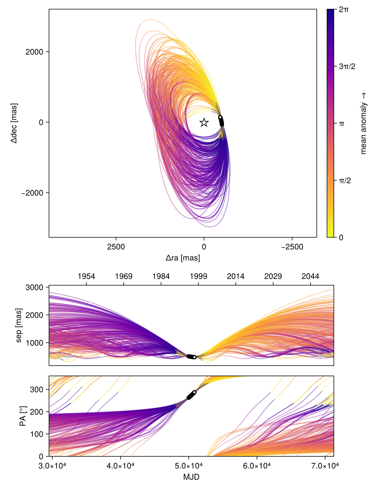
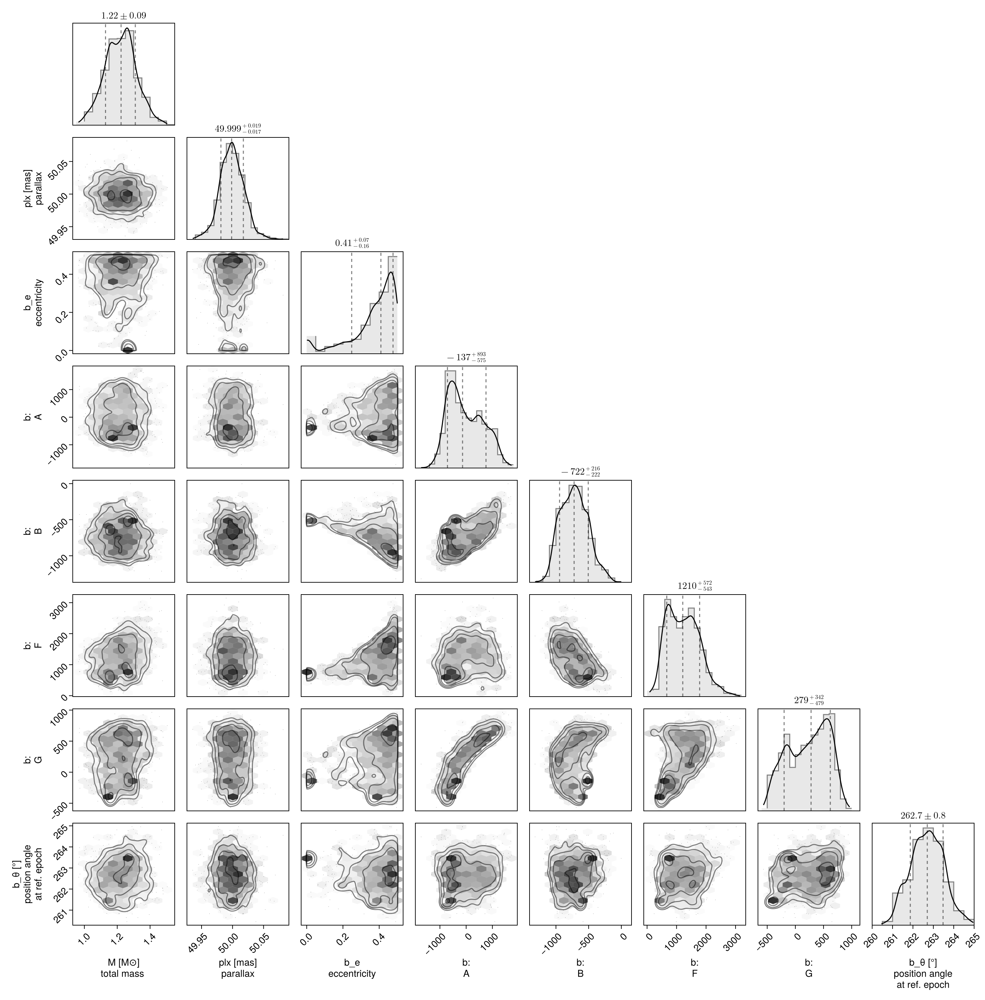
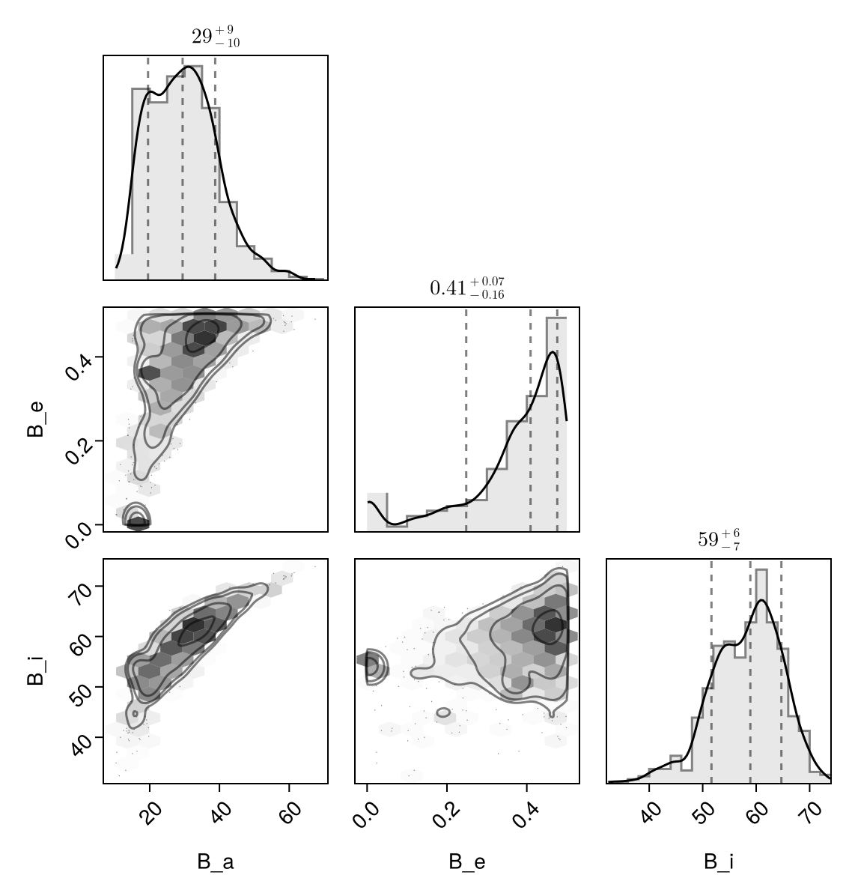

Fit with a Thiele-Innes Basis
This example shows how to fit relative astrometry using a Thiele-Innes orbital basis instead of the traditional Campbell basis used in other tutorials. The Thiele-Innes basis is more suitable then Campbell for fitting low-eccentricity orbits, because it does not have the issues where ω, Ω, and tp become degenerate as eccentricity and/or inclination fall to zero.
At the end, we will convert our results back into the Campbell basis to compare.
using Octofitter
using CairoMakie
using PairPlots
using Distributions
astrom_like = PlanetRelAstromLikelihood(
(epoch = 50000, ra = -505.7637580573554, dec = -66.92982418533026, σ_ra = 10, σ_dec = 10, cor=0),
(epoch = 50120, ra = -502.570356287689, dec = -37.47217527025044, σ_ra = 10, σ_dec = 10, cor=0),
(epoch = 50240, ra = -498.2089148883798, dec = -7.927548139010479, σ_ra = 10, σ_dec = 10, cor=0),
(epoch = 50360, ra = -492.67768482682357, dec = 21.63557115669823, σ_ra = 10, σ_dec = 10, cor=0),
(epoch = 50480, ra = -485.9770335870402, dec = 51.147204404903704, σ_ra = 10, σ_dec = 10, cor=0),
(epoch = 50600, ra = -478.1095526888573, dec = 80.53589069730698, σ_ra = 10, σ_dec = 10, cor=0),
(epoch = 50720, ra = -469.0801731788123, dec = 109.72870493064629, σ_ra = 10, σ_dec = 10, cor=0),
(epoch = 50840, ra = -458.89628893460525, dec = 138.65128697876773, σ_ra = 10, σ_dec = 10, cor=0),
)
@planet b ThieleInnesOrbit begin
e ~ Uniform(0.0, 0.5)
A ~ Normal(0, 10000) # milliarcseconds
B ~ Normal(0, 10000) # milliarcseconds
F ~ Normal(0, 10000) # milliarcseconds
G ~ Normal(0, 10000) # milliarcseconds
θ ~ UniformCircular()
tp = θ_at_epoch_to_tperi(system,b,50000.0) # reference epoch for θ. Choose an MJD date near your data.
end astrom_like
@system TutoriaPrime begin
M ~ truncated(Normal(1.2, 0.1), lower=0)
plx ~ truncated(Normal(50.0, 0.02), lower=0)
end b
model = Octofitter.LogDensityModel(TutoriaPrime)LogDensityModel for System TutoriaPrime of dimension 9 with fields .ℓπcallback and .∇ℓπcallback
We now sample from the model as usual:
using Random
Random.seed!(0)
results = octofit(model)Chains MCMC chain (1000×24×1 Array{Float64, 3}):
Iterations = 1:1:1000
Number of chains = 1
Samples per chain = 1000
Wall duration = 5.65 seconds
Compute duration = 5.65 seconds
parameters = M, plx, b_e, b_A, b_B, b_F, b_G, b_θy, b_θx, b_θ, b_tp
internals = n_steps, is_accept, acceptance_rate, hamiltonian_energy, hamiltonian_energy_error, max_hamiltonian_energy_error, tree_depth, numerical_error, step_size, nom_step_size, is_adapt, loglike, logpost, tree_depth, numerical_error
Summary Statistics
parameters mean std mcse ess_bulk ess_tail ⋯
Symbol Float64 Float64 Float64 Float64 Float64 Flo ⋯
M 1.2204 0.0950 0.0039 589.7275 529.7090 1. ⋯
plx 49.9991 0.0194 0.0006 928.5796 609.9170 0. ⋯
b_e 0.3671 0.1301 0.0225 50.7381 22.1474 1. ⋯
b_A -9.6028 664.7655 54.6667 167.9132 323.8977 1. ⋯
b_B -717.5085 207.4172 13.9616 234.2458 315.2138 1. ⋯
b_F 1230.7772 544.2176 68.8097 59.3468 172.0983 1. ⋯
b_G 228.4954 357.2886 43.3288 87.6542 45.4942 1. ⋯
b_θy -0.1278 0.0184 0.0008 512.3864 414.3809 1. ⋯
b_θx -0.9980 0.1063 0.0071 223.9091 359.4952 1. ⋯
b_θ -1.6984 0.0140 0.0010 205.7878 291.6044 1. ⋯
b_tp 20414.0211 34121.3206 2866.1323 344.5827 633.5273 1. ⋯
2 columns omitted
Quantiles
parameters 2.5% 25.0% 50.0% 75.0% 97.5% ⋯
Symbol Float64 Float64 Float64 Float64 Float64 ⋯
M 1.0274 1.1559 1.2234 1.2829 1.4033 ⋯
plx 49.9597 49.9861 49.9985 50.0118 50.0384 ⋯
b_e 0.0024 0.3225 0.4094 0.4631 0.4964 ⋯
b_A -1027.2504 -560.2467 -137.3938 518.0346 1236.3888 ⋯
b_B -1067.9838 -875.8269 -722.1653 -576.7736 -281.7918 ⋯
b_F 415.6705 763.5741 1210.3509 1607.3384 2408.0791 ⋯
b_G -411.8398 -100.3290 278.7269 538.5060 775.5720 ⋯
b_θy -0.1688 -0.1373 -0.1269 -0.1164 -0.0921 ⋯
b_θx -1.2188 -1.0700 -0.9899 -0.9232 -0.8123 ⋯
b_θ -1.7241 -1.7082 -1.6981 -1.6880 -1.6700 ⋯
b_tp -53533.7166 -5280.8193 47203.9906 48672.1361 49831.4102 ⋯
Notice that the fit was very very fast! The Thiele-Innes orbital paramterization is easier to explore than the default Campbell in many cases.
We now display the results:
octoplot(model,results)
octocorner(model, results, small=false)
Conversion back to Campbell Elements
To convert our chain into the more familiar Campbell parameterization, we have to do a few steps. We start by turning the chain table into a an array of orbit objects, and then convert their type:
orbits_ti = Octofitter.construct_elements(results, :b, :) # colon means all rows1000-element Vector{ThieleInnesOrbit{Float64}}:
ThieleInnesOrbit{Float64}(0.49991502465583004, 49451.698770820076, 1.273349906273309, 49.9869634880156, -384.638979195726, -1056.7078618072735, 2230.814918473973, 332.2192910889319, -40.86498639578673, -11.841412122340248, 103123.48747594068, 0.0222537511169544, 1.7318545876487306)
ThieleInnesOrbit{Float64}(0.49971067034937544, -38477.634874493364, 1.1706062347482156, 49.99260080724213, 532.7180377011522, -803.8723088665041, 1901.6946303176023, 789.3585708577192, -36.62383812335105, 4.135400437631127, 89902.6551572339, 0.025526325341430067, 1.7313828870029735)
ThieleInnesOrbit{Float64}(0.4994915002895121, 48605.68478489745, 1.1488035972297632, 50.003044067667545, -765.3030274133109, -1117.2442218498031, 1501.5112502418622, 93.0468286229862, -24.378438980995433, -20.55774900449778, 74955.70453862021, 0.030616541312336418, 1.7308772733109012)
ThieleInnesOrbit{Float64}(0.4996323040160811, 49434.06665306606, 1.1400951072102037, 49.996838994949314, -389.80571754795244, -1100.464643456536, 1716.3002312269325, 372.8352673942357, -29.944783956985418, -14.419234497025155, 80042.8368568185, 0.02867070327238729, 1.7312020661218028)
ThieleInnesOrbit{Float64}(0.49960782618035676, 49813.619166073564, 1.1521889428327523, 50.011860619595566, -211.32409100829176, -1056.8316000670104, 1778.2762592145532, 448.97155233515656, -31.5669766056329, -10.769187031250409, 80404.18860690315, 0.028541851666729207, 1.731145594200302)
ThieleInnesOrbit{Float64}(0.4859073659444449, 48341.274784863235, 1.2057988977440168, 50.01679394650259, -889.5468012622205, -976.6718758997222, 1634.537134227316, -128.37950872221762, -27.42291126920124, -19.36658809326672, 78141.9287282075, 0.029368156915911214, 1.7001027785091705)
ThieleInnesOrbit{Float64}(0.4866145826229937, -60631.79340884728, 1.2804579585154041, 50.00465512164763, 523.260064601909, -819.440868332039, 2343.941853008741, 729.6655920049458, -45.417326920544134, 5.534947780161966, 112084.19049039396, 0.020474648695425323, 1.7016781799353853)
ThieleInnesOrbit{Float64}(0.4922640430059228, -72082.96970110918, 1.3410114459705187, 49.96838061121183, 923.1499062692699, -720.3170565685114, 2467.1766467193697, 806.3779516997416, -48.435669515557066, 14.029942226867222, 124484.745444334, 0.018435065408300606, 1.714367310578925)
ThieleInnesOrbit{Float64}(0.46531052414675156, 49852.38335498282, 1.342946315375366, 50.00979544905889, -140.53111340386926, -952.6222575116312, 3022.7663442780386, 461.79630079954666, -58.33576665307992, -5.926871246633405, 151752.82691137126, 0.015122515153818107, 1.655442178892096)
ThieleInnesOrbit{Float64}(0.4714766613858165, 48951.42116726868, 1.1315648291966058, 50.02391293461321, -559.6219849392269, -978.0969599385098, 1995.7944981719797, 110.95945458281889, -35.73524539327796, -13.703538627291028, 94269.62648854838, 0.024343837035152825, 1.6685706660313278)
⋮
ThieleInnesOrbit{Float64}(0.4150955352080951, 49235.93476845862, 1.28971738848251, 50.00037447902533, -447.98242437322625, -923.3824566566008, 1386.578452987337, 150.5762022573068, -23.041857591406544, -13.196693199381523, 55131.14292027565, 0.04162591782144889, 1.5554297888715716)
ThieleInnesOrbit{Float64}(0.3757468897285163, 48331.402851675935, 1.2419341819017102, 50.00344279612893, -753.8463508609196, -733.758222729399, 1214.7349037024223, -236.00175534484805, -19.84406662369007, -14.965742896225164, 50973.2421579436, 0.045021354880490305, 1.484529774284726)
ThieleInnesOrbit{Float64}(0.36571164016662794, 48162.36768736383, 1.2610088098715189, 49.997554878402525, -806.7933200449387, -703.8882024240812, 1078.9058870963383, -283.91309982098863, -16.989578586757883, -15.790305135380688, 46485.454945600744, 0.04936779530903848, 1.46735817089585)
ThieleInnesOrbit{Float64}(0.48248131121311844, 22869.79881086345, 1.0569639580801005, 49.99527083214664, 329.9501966736082, -791.9850415358069, 519.729344857243, 474.55461217770414, -6.835539670177305, -11.9606660051596, 28205.243620177665, 0.08136375120547505, 1.6925113692666394)
ThieleInnesOrbit{Float64}(0.4852239489305528, 25871.256125059175, 1.2409669872414795, 49.990969496355106, 593.2099109174877, -671.7676167933275, 435.31161865132333, 546.4698276865137, -3.68637007218999, -11.8174683146486, 25671.927389361303, 0.08939275925005033, 1.6985831233920514)
ThieleInnesOrbit{Float64}(0.49912372570520047, 21802.27386622064, 1.170442089471545, 49.98510618561174, 465.19496755966765, -861.1116056850359, 621.1211643562062, 392.1767193220649, -1.4983811128542153, -13.025938278300647, 29379.450921310392, 0.07811188952266473, 1.730029499706352)
ThieleInnesOrbit{Float64}(0.49829230672618957, 24805.71171433242, 1.215831746096362, 49.99141212605464, 570.1229998443077, -707.0829451100095, 445.04460850100014, 544.6655885243853, -4.285322722608842, -12.268735586149052, 26716.379020371256, 0.08589803366886273, 1.728116013019069)
ThieleInnesOrbit{Float64}(0.4432710024602924, 31010.336655615654, 1.2502646741044525, 49.99431570362236, 508.6274213647734, -504.6250449292452, 289.19569871417383, 588.5204371667368, -6.750499589778681, -8.88369069369083, 20595.73015226047, 0.11142525210984447, 1.610096929697974)
ThieleInnesOrbit{Float64}(0.4181421698774695, 26383.132625407306, 1.251799180678582, 50.01241547376352, -51.93257671439892, -864.9794861392053, 581.6817411081909, 34.645015768850065, -1.8566931638107835, -12.957571580777072, 23746.335058151846, 0.09664162570695894, 1.5611744827937597)Here is one of those entries:
display(orbits_ti[1])We can now make a table of results (and visualize them in a corner plot) by querying properties of these objects:
table = (;
B_a = semimajoraxis.(orbits_ti),
B_e = eccentricity.(orbits_ti),
B_i = rad2deg.(inclination.(orbits_ti)),
)
pairplot(table)
We can also convert the orbit objects into Campbell parameters:
orbits_campbell = Visual{KepOrbit}.(orbits_ti)
orbits_campbell[1]KepOrbit{Float64}
─────────────────────────
a [au ] = 46.6
e = 0.49991502
i [° ] = 65.8
ω [° ] = 254.0
Ω [° ] = 15.2
tp [day] = 49500.0
M [M⊙ ] = 1.27
period [yrs ] : 282.3
mean motion [°/yr] : 1.28
──────────────────────────
plx [mas] = 50.0
distance [pc ] : 20.0
──────────────────────────